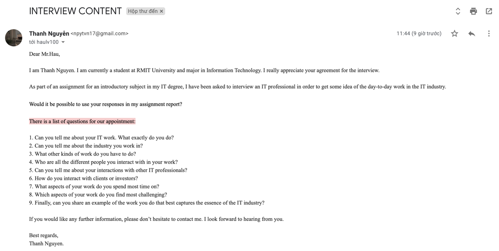
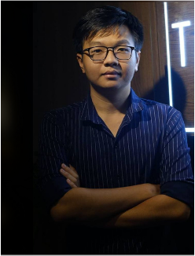

I sent an email to Mr. Hau, who is a Game Developer at Bliss Corporation. I asked him for an interview, and he accepted. However, due to his personal reasons, so we implemented the interview via answer the question in the email.
The interviewee's profile
Full name: Mr. Le Van Hau
Current Job: Game Developer at Bliss Corporation
Nationality: Vietnamese
Email: haulv100@gmail.com
There are about 9 questions I asked him about his journey in IT industry:
1. Can you tell me about your IT work. What exactly do you do?
My main work is coding to build features or programs.
2. Can you tell me about the industry you work in?
I am working in the game development industry. This work requires the code to achieve high performance and processing speed to create a good user experience (UX).
3. What other kinds of work do you have to do?
Of course, coding only takes up 30% of my working time, the rest of the time is spent reading and analyzing requirements, then testing the effectiveness of the program.
4. Who are all the different people you interact with in your work?
I often work directly with Game Designer, Game Tester, Game Leader, and even other Game Developers.
5. Can you tell me about your interactions with other IT professionals?
I will take requests for game features from Game Designer and discuss the optimal solution with Game Leader and other Game Developers. After coding is completed, I will test the feature with Game Tester and this process happens regularly until the feature is complete.
6. How do you interact with clients or investors?
The success of the game depends on the end-user experience. Therefore, we put end-user experience as a development goal. End users will play the game and give feedback on the product, based on which we will make adjustments to make the game better.
7. What aspects of your work do you spend most time on?
In fact, programming work consists of many stages, but the stage that takes the most time is fixing the logic errors of the code. Because a good code must ensure the performance and satisfy the test cases.
8. Which aspects of your work do you find most challenging?
My background is Web Developer. So when switching to a Game Developer, it was a bit difficult at first to access technology. However, the game development process is similar to other software production processes.
9. Finally, can you share an example of the work you do that best captures the essence of the IT industry?
I will take my current job as an example. The IT industry includes many branches of software development, game development, web development, IoT or AI product development, etc. At its core, it is all about creating products to serve end-users. The workflow is the same from generating ideas, designing wireframes, designing UI, coding, and testing. Basically, every stage in the process is crucial to creating a good product.